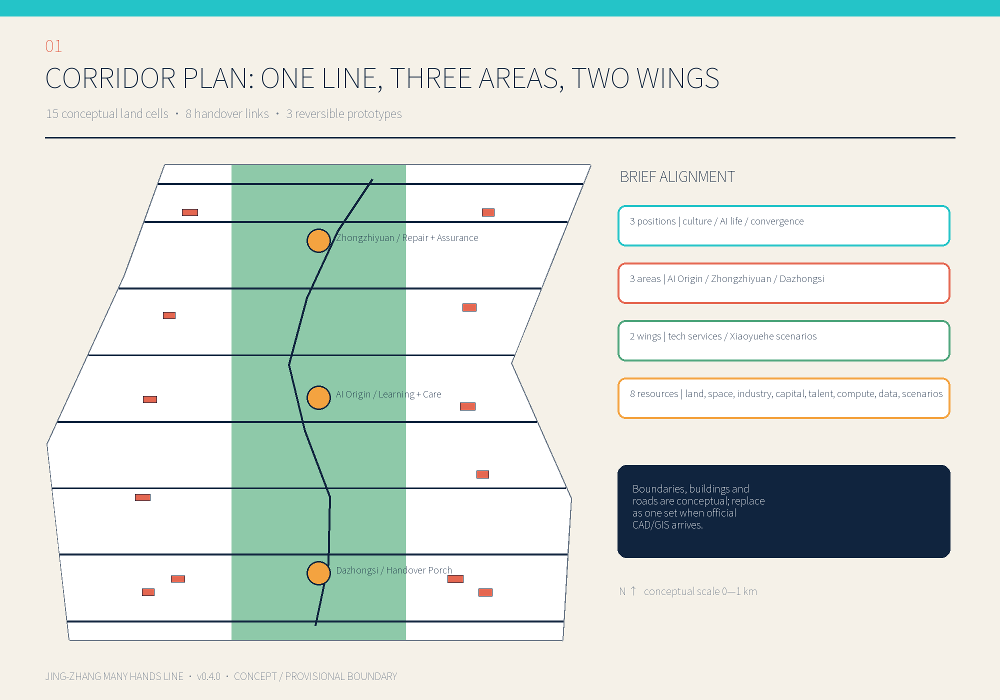
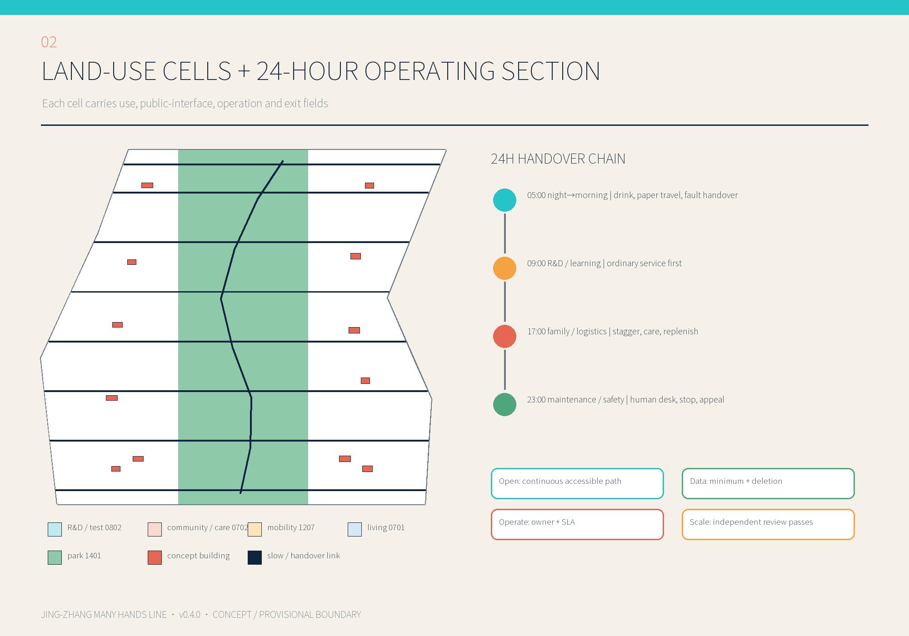
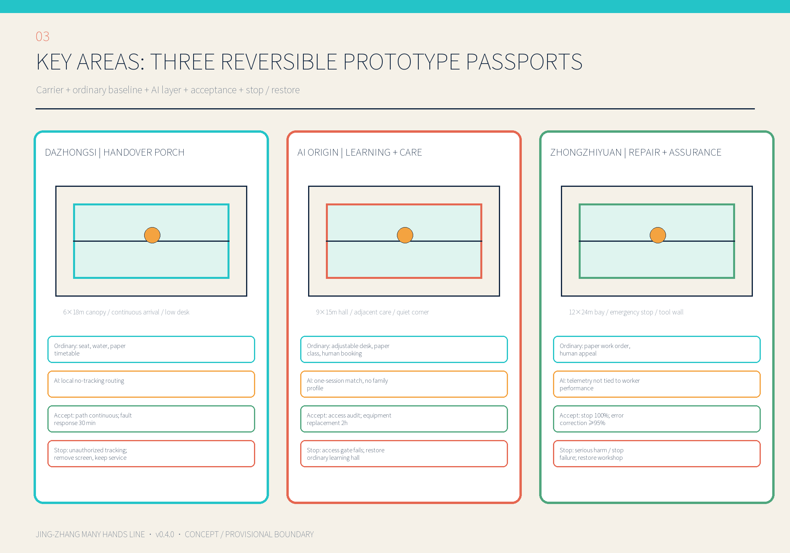
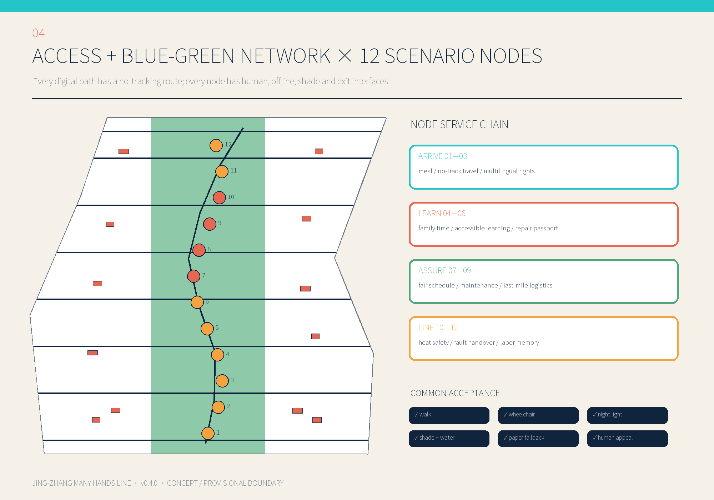
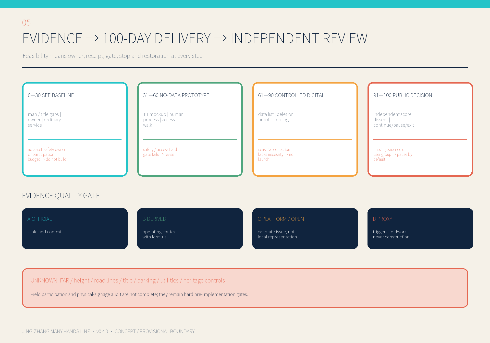

Provisional boundaries and conceptual geometry. Not an approval, investment commitment, construction document or government endorsement. Field participation remains pending.
Review index and core metrics
Overview map · three-level scope · key areas · land-use zoning · buildings · active travel · blue-green public space · AI scenarios · renewal projects · task coverage · self-check status · sources · assumptions.
≈11.4 km² conceptual site37.43% conceptual green ratio0.47% concept handover-space ratio
Corridor plan

Land-use + 24-hour operation

Three prototype passports

Access + blue-green network

Evidence + 100-day delivery
